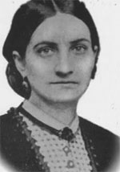

|

|

|
|
|
Born in Edinburgh, Scotland in 1833, Kate Cumming served as
a nurse for the Army of Tennessee during the Civil War.
As a child, Kate immigrated with her family to Mobile,
Alabama where her father, David Cumming, became a successful
merchant. When her mother and two sisters left for England
in the spring of 1861, Kate remained with her father and
brother in Mobile. After her brother enlisted in the
Confederate Army, Kate volunteered for hospital duty. On
April 7, 1862, she departed from Mobile with a group of
women volunteers heading to a command post hospital in
Corinth, Mississippi. Cumming served as a nurse with the
Army of Tennessee, from the Battle of Shiloh until the end
of the Civil War. Early in her career, Cumming became a
hospital matron and, like others in her position, constantly
struggled against hostility from men to effectively do her
job. Cumming's assignment as hospital matron arose, in
part, from her status as a mature, unmarried woman which
allowed her some freedom from male control and domestic
obligations.
In 1866, Cumming became one of the first Southern nurses
to publish her story, A Journal of Hospital Life in the
Confederate Army of Tennessee. This account of
Cumming's nursing career included her impressions of wartime
life in the Confederacy. In her journal, Cumming criticized
the inadequate supplies, lack of competency by male nurses
and hospital heads, and the chaos of Civil War hospitals.
In addition to accounts of her constant frustration with
male doctors who refused to value women's ideas or
contributions, Cumming also recorded her exasperation with
those Southern women too timid to become nurses. Cumming's
memoir, Gleanings from the Southland, published in
1895, retold the story of her diary but incorporated the
outcome of the War, events in postwar America, and stressed
national reconciliation.
In 1874, Kate and her father moved to Birmingham,
Alabama, where she taught school and music. She also took
an active role in the activities of the United Daughters of
the Confederacy and the United Confederate Veterans.
Kate Cumming died June 5, 1909 in Birmingham and was
buried in Mobile.
Source: Joan Waugh, ed., Facts on File Encyclopedia of American
History: Civil War and Reconstruction, 1856 to 1869 (New York: Facts on
File, 2003), 85.
|